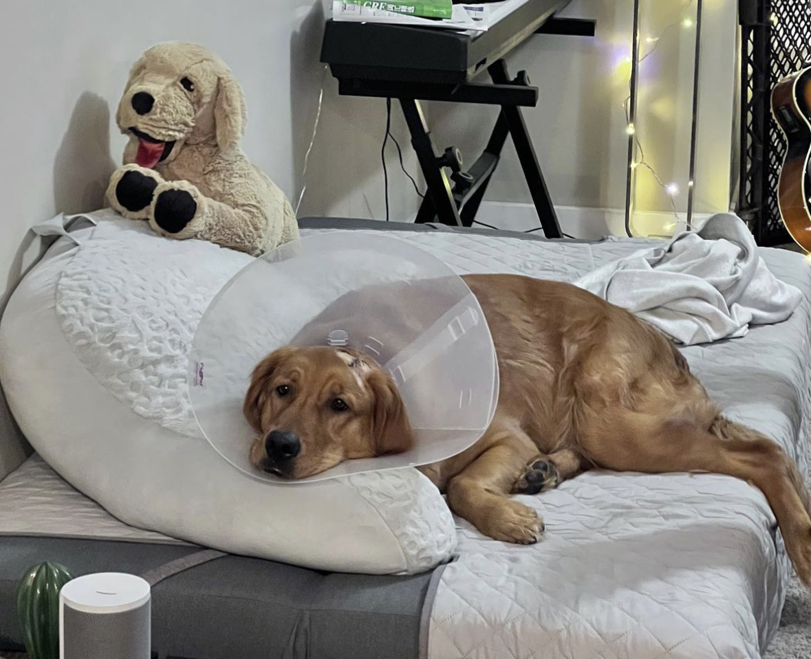
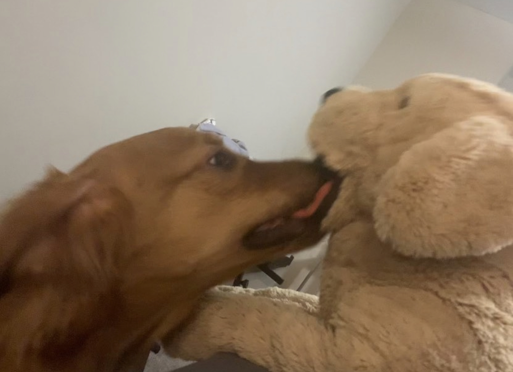
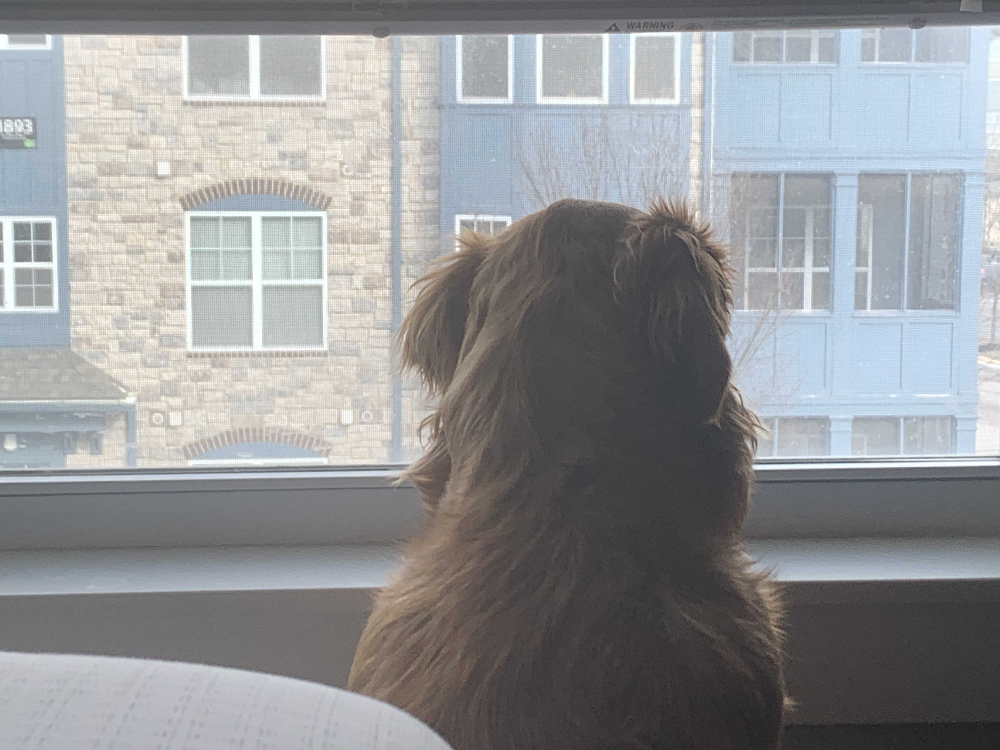
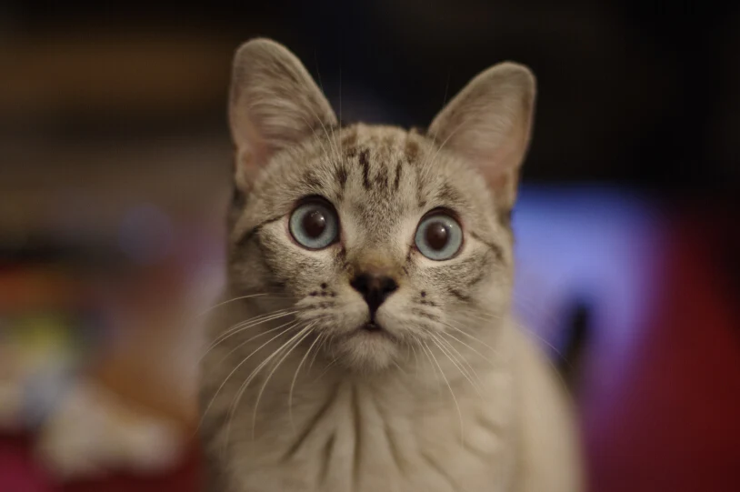
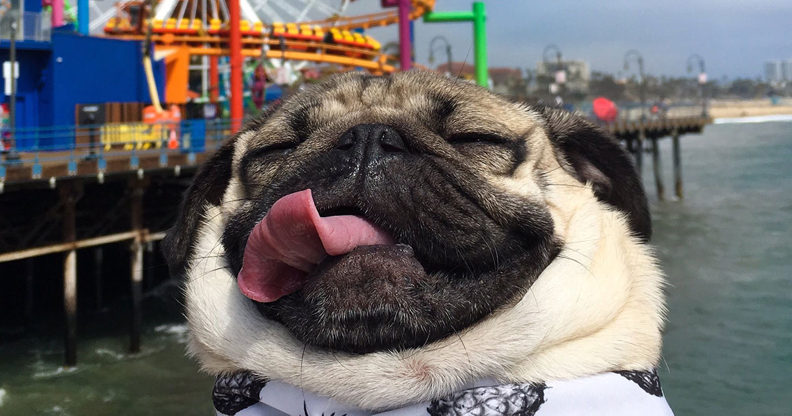

Pets
Except for the description of Bubble, other descriptive text is generated by ChatGPT.
Bubble
Bubble is a Golden Retriever raised by my friend. She is one year old now and lives happily in Indiana. She has a distinct black birthmark on her tongue, which makes it easier to identify her.
Photo Gallery
 Grumpy Cat

Grumpy Cat, whose real name was Tardar Sauce, was a famous internet sensation known for her perpetually grumpy expression. She has a grumpy apperance because of an underbite and feline dwarfism.
Nala Cat
Nala Cat is a tabby cat with a distinctive appearance who gained fame on Instagram. She has millions of followers and has collaborated with various brands.
Jiffpom
Jiffpom is a Pomeranian dog with a talent for performing tricks. He holds Guinness World Records for his speedy paw work and is known for his fluffy appearance.
Doug the Pug
Doug the Pug is a Pug from Nashville, Tennessee, known for his humorous and adorable social media posts. He has a massive following and even won a People's Choice Award.